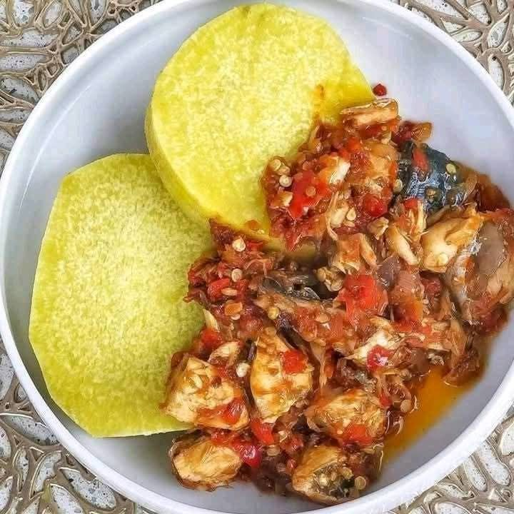

Boiled Yam with Savory Fish Sauce
A hearty and traditional Nigerian meal featuring perfectly boiled Puna yam served with a rich, spicy fish sauce.
Recipe Details
Prep Time: 20 minutes
Cook Time: 30 minutes
Servings: 3 people
Difficulty: Easy
Dish Preview

Ingredients
- 1 medium tuber of Puna yam
- 2 large fresh mackerel or Titus fish
- 4 large tomatoes
- 2 habanero peppers (blended)
- 1 medium onion, thinly sliced
- 1/2 cup vegetable oil
- 2 seasoning cubes
- A pinch of salt
Instructions
- Peel the yam, cut into rounds, and wash thoroughly in clean water.
- Place the yam in a pot, add water and salt, and boil for 20 – 25 minutes until tender.
- Clean and season the fish, then lightly fry or steam it.
- Heat vegetable oil in a pan and sauté the sliced onions until soft.
- Add the blended tomatoes and peppers, and cook until the mixture thickens and oil rises.
- Add the fish, season to taste, and simmer for about 5 minutes.